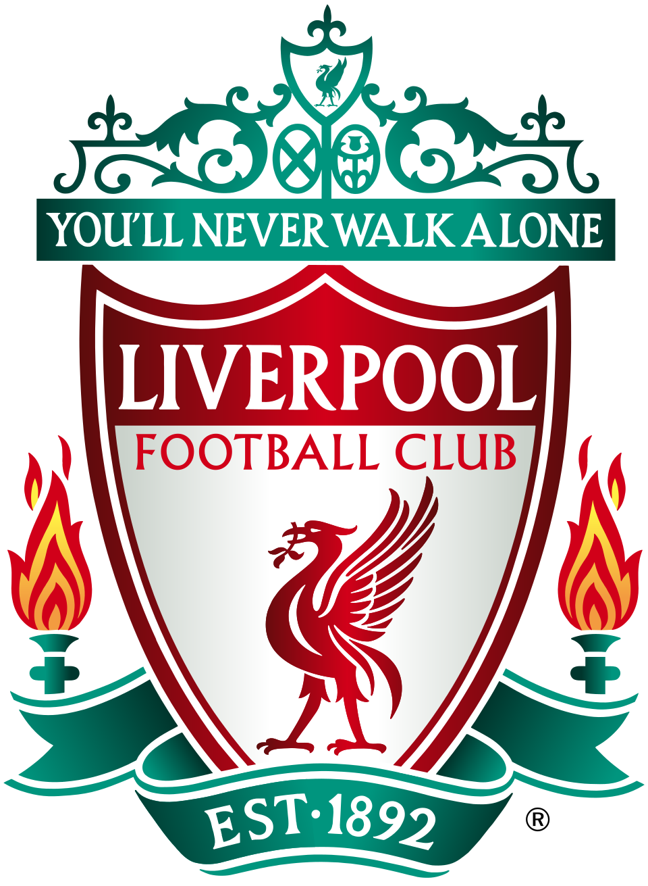

A Liverpool FC története - Wikipédia
A Liverpool Football Club története 1892-ben kezdődött, amikor John Houlding és az Everton között vita alakult ki az Anfield használatáról. Az Everton végül elhagyta az Anfieldet, ezért Houlding úgy döntött, hogy saját futballklubot alapít. A Liverpool FC-t 1892. június 3-án hivatalosan is elismerték. Az új klub első otthona így az Anfield lett, amely azóta is a Liverpool történetének egyik legfontosabb helyszíne.
A Liverpool első mérkőzéseit 1892-ben játszotta, és a klub hamar fejlődésnek indult. Kezdetben a Lancashire League-ben szerepelt, majd 1893-ban bekerült a Football League másodosztályába. A csapat gyorsan alkalmazkodott az országos versenyrendszerhez, és már rövid idő után feljutott az élvonalba. Ez jelentette az első fontos lépést afelé, hogy a Liverpool az angol futball meghatározó klubjává váljon.
A Liverpool a 20. század elején kezdte megszerezni első jelentős sikereit. A klub 1901-ben nyerte meg első angol bajnoki címét, majd 1906-ban ismét az ország legjobb csapata lett. Ezek a sikerek megmutatták, hogy az újonnan alapított klub rövid idő alatt komoly erővé vált. A Liverpool ekkor kezdte kialakítani azt a történelmi hátteret, amelyre a későbbi korszakok építeni tudtak.
Az első világháború jelentősen megváltoztatta az angol labdarúgás működését, és a bajnoki mérkőzések is szüneteltek. A háború után a Liverpool visszatért a bajnoki küzdelmekhez, és az 1920-as évek elején ismét sikeres időszakot élt át. A klub 1922-ben és 1923-ban is bajnoki címet szerzett. Ezt követően azonban a Liverpool teljesítménye változóvá vált, és újabb nehezebb időszak következett.
A második világháború ismét megszakította a normál angol bajnoki rendszert. A futball a háború után fokozatosan indult újra, és a Liverpool ismét bekapcsolódott az országos versenyekbe. 1947-ben a klub újabb bajnoki címet szerzett, ami azt mutatta, hogy sikerült visszatérnie a legjobbak közé. Az ezt követő években azonban a Liverpool teljesítménye ismét visszaesett.
Az 1950-es évek különösen nehéz időszakot jelentettek a klub történetében. A Liverpool 1954-ben kiesett az angol élvonalból, és több évet töltött a másodosztályban. A klubnak ekkor jelentős változásokra volt szüksége ahhoz, hogy visszatérjen a legjobbak közé. Ez a nehéz időszak később fontos alapot jelentett egy teljes újjáépítéshez.
1959-ben Bill Shankly lett a Liverpool vezetőedzője, ami a klub történetének egyik legfontosabb fordulópontja volt. Shankly új edzésmódszereket vezetett be, fejlesztette a játékosokat, és megváltoztatta a klub mindennapi működését. Munkájának eredményeként a Liverpool 1962-ben visszajutott az élvonalba. Shankly nemcsak egy sikeres csapatot épített, hanem olyan futballkultúrát is kialakított, amely hosszú időre meghatározta a klubot.
Az Anfield a Liverpool történetének kezdete óta a klub otthona, ezért sokkal többet jelent egyszerű stadionnál. Az évtizedek során a stadion egyik legismertebb része a Kop lett, ahol a Liverpool szurkolói hatalmas tömegben buzdították a csapatot. Az 1960-as években a You'll Never Walk Alone is a klubhoz kapcsolódó fontos hagyománnyá vált. Az Anfield és a szurkolók közötti kapcsolat azóta is a Liverpool identitásának fontos része.
Bill Shankly 1974-ben távozott a vezetőedzői posztról, utódja pedig Bob Paisley lett. Paisley korábban Shankly stábjának tagja volt, ezért jól ismerte a klub működését és filozófiáját. Az általa továbbfejlesztett rendszerben fontos szerepet kapott az edzői stáb együttműködése és a játékosok hosszú távú fejlesztése. Később Joe Fagan is ebből a klubon belül kialakított rendszerből került a vezetőedzői posztra.
A Liverpool történetének legsúlyosabb eseményei közé tartozik az 1985-ös Heysel-tragédia. A Juventus elleni európai kupadöntő előtt kialakult stadionkatasztrófában 39 ember vesztette életét, és az eseménynek komoly következményei lettek az angol klubfutball számára. Négy évvel később, 1989-ben a Hillsborough Stadionban történt tragédia során 97 Liverpool-szurkoló vesztette életét. Hillsborough hosszú időre meghatározta a klub és szurkolóinak történetét, valamint fontos változásokhoz vezetett az angol stadionbiztonságban.
1992-ben létrejött a Premier League, amely új korszakot indított az angol futballban. A Liverpool az új bajnokság alapító résztvevői között maradt az élvonalban, de a következő években változó eredményeket ért el. A 2000-es években a klubnál jelentős vezetői és tulajdonosi változások is történtek. 2007-ben George Gillett és Tom Hicks került a klub tulajdonosi pozíciójába, de később komoly pénzügyi és vezetési problémák alakultak ki.
2010-ben a Fenway Sports Group lett a Liverpool tulajdonosa, ezzel újabb korszak kezdődött a klub történetében. A klub fokozatosan stabilabbá vált, és hosszabb távú építkezés indult el. 2015-ben Jürgen Klopp lett a Liverpool vezetőedzője, aki új futballfilozófiát és új lendületet hozott a csapathoz. Klopp érkezésével lezárult a történelemnek az a része, amelyet ezen az oldalon érdemes bemutatni, a későbbi trófeákat és a jelenlegi csapatot pedig külön HTML-oldalon lehet feldolgozni.